This is the story of one long project and the career that led to it. The dates and numbers come from my resume and from the project's own git history, measured on November 4, 2026.
1995 – 1998 · Cleveland
At Case Western Reserve University I installed fiber network cards in students' PCs for CWRUnet, the first all-fiber-optic campus network. In my second-to-last year at Case Western, in Professor Randall Beer's Autonomous LEGO Robotics course, which ended in a public robot competition, I built a LEGO robot-soccer player run by C code compiled for its on-board controller: it read its sensors to find the ball and the goal and steered the ball in by itself. I also trained in Wing Chun kung fu and competed. I left in 1998 with an M.S. and a B.S. (cum laude) in Computer Engineering.
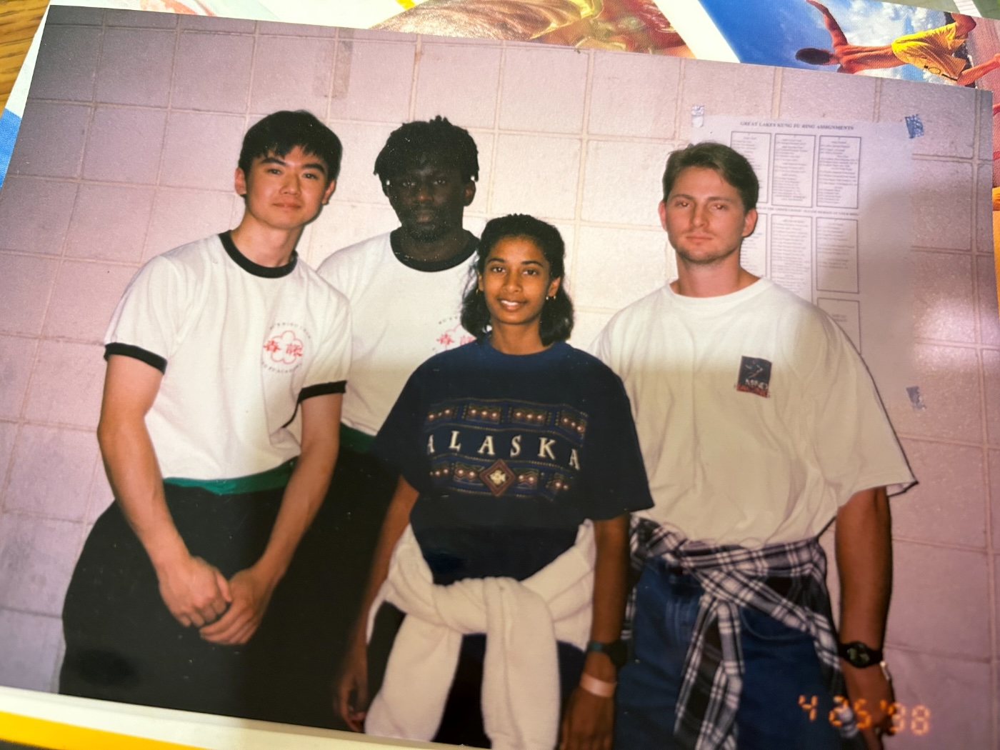
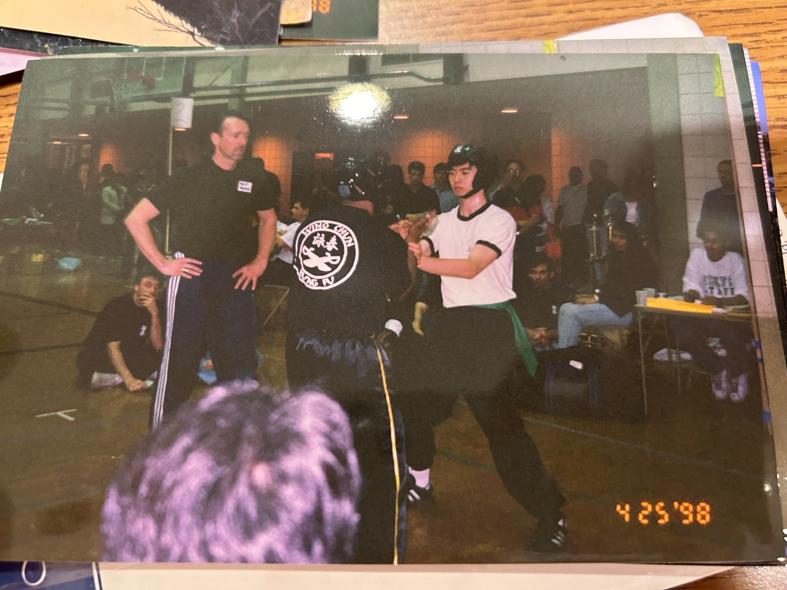
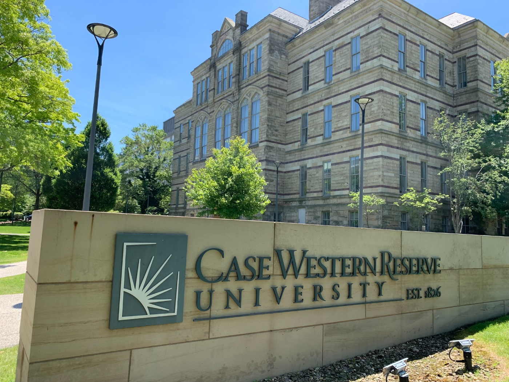
1997 – 2000 · Fort Collins, Bellevue
I wrote C test libraries that probed individual nodes on HP motherboards at Agilent, co-owned OrbWorks with Jeremy Dewey, where I developed PocketC for Windows CE: a C compiler and runtime library that let hobbyists write their own programs on the device itself. PocketC won the CEcity Choice Award on September 12, 1998, a "5 cows" rating from CEMonster, and I wrote an article about it for Handheld PC magazine ("PocketC programming language and applications", May/June 1999). The original OrbWorks page is still online, copyright 1998-2002 Jeremy Dewey and Kevin Cao. I also integrated CPU, compiler and linker settings into Visual Studio for Windows CE at bSquare.
2000 – 2012 · Redmond, Beijing
On Windows P2P I built a build-verification tool so every developer could test on their own machine before checking in, and stress automation that ran on idle machines and published a daily stress score. In Beijing, as a Principal Development Manager, I built the Search Technology Center test team and managed the Bing search testing and Cosmos storage tools teams. The rule I carried everywhere: code review, unit tests and build verification are the cheapest way to catch a bug, before it gets deeper into the system.
2013 – 2019 · Beijing
I spent four years as a full-time parent, and built an iOS greeting-card app end to end as a learning project. Then came a short spell at Amazon in FBA (Fulfillment by Amazon), on the team responsible for its global backend, modelling how sellers would react to fee changes, a year as CTO of a consumer-privacy startup, and from 2019 my own small company, where I started learning to trade.
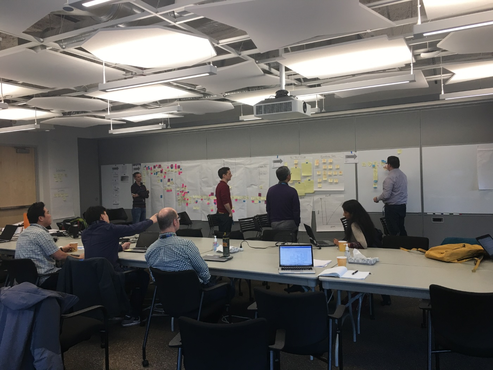
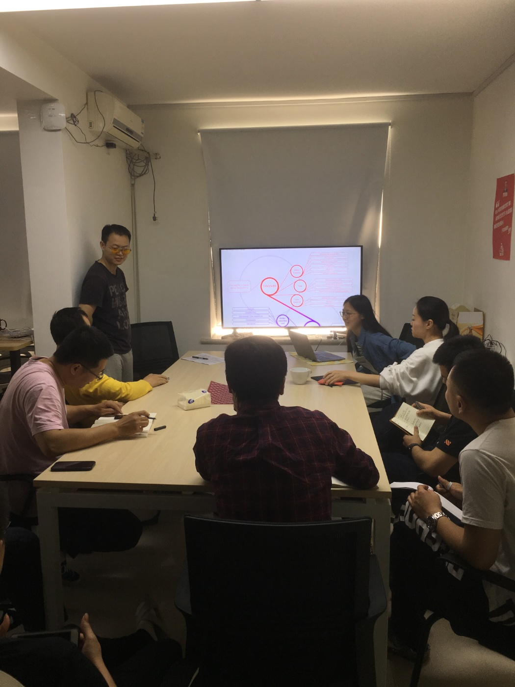
March 2020
On March 8, 2020 I made the first commit of rtrader, a trading bot I wrote by hand. I kept at it, slowly, through 2021, 2022 and 2023. In 2024 I built my own code generator that wrote Python automatically from historic trading scenarios, which is why that year has the most commits of the hand-coded era.
May 2024 – November 2025 · Los Angeles, Rhode Island
In May 2024 I was treated for leukemia at City of Hope in Los Angeles, including a bone marrow transplant, followed by a long recovery. I left the hospital in March 2025 and rested at home in Rhode Island until I was strong enough to work again. During recovery I taught myself modern AI engineering.
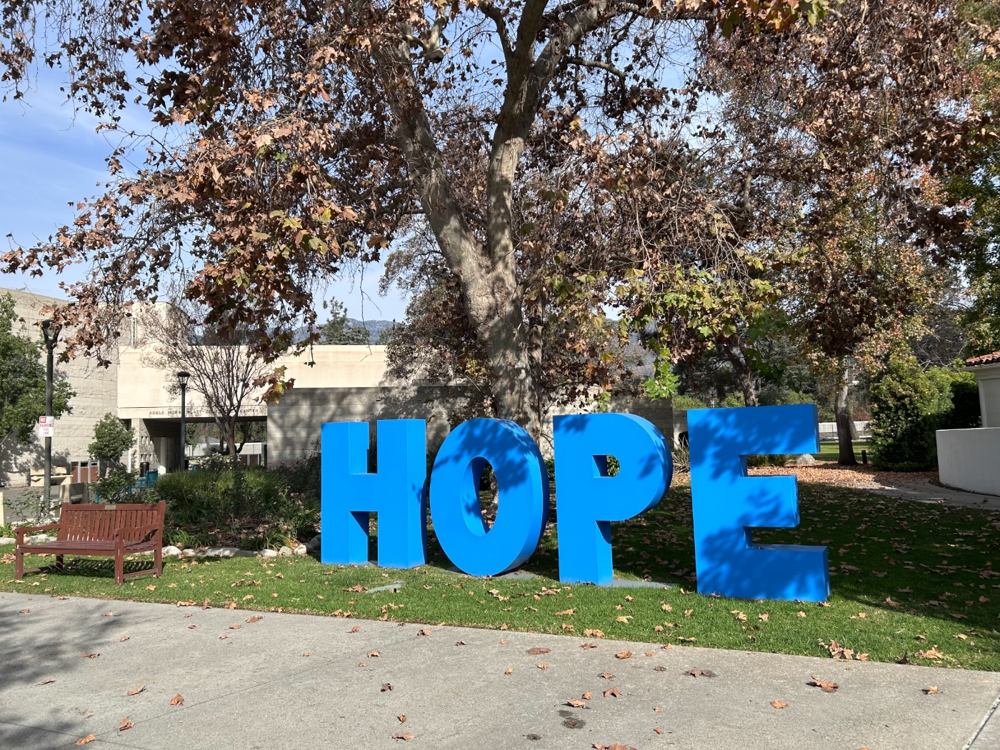
The project never stopped. The git history has 2,689 commits in those 19 months, at least one in every single month, including the months in hospital. Since the first commit in March 2020 there has not been one month without a commit: 81 months in a row.
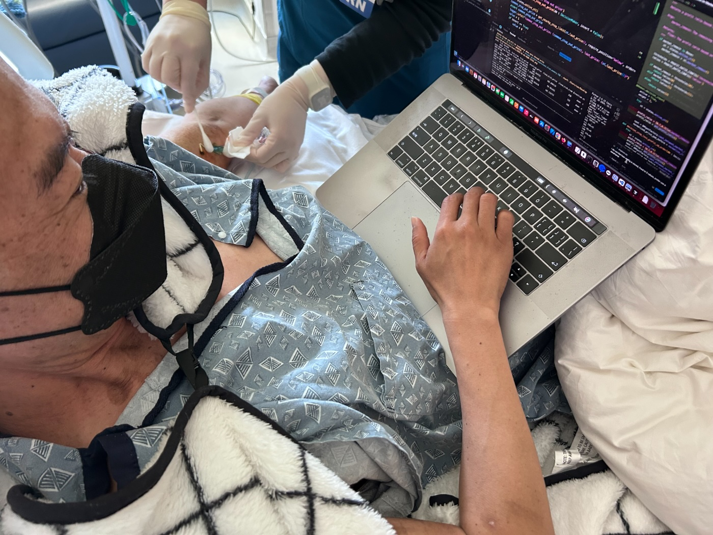
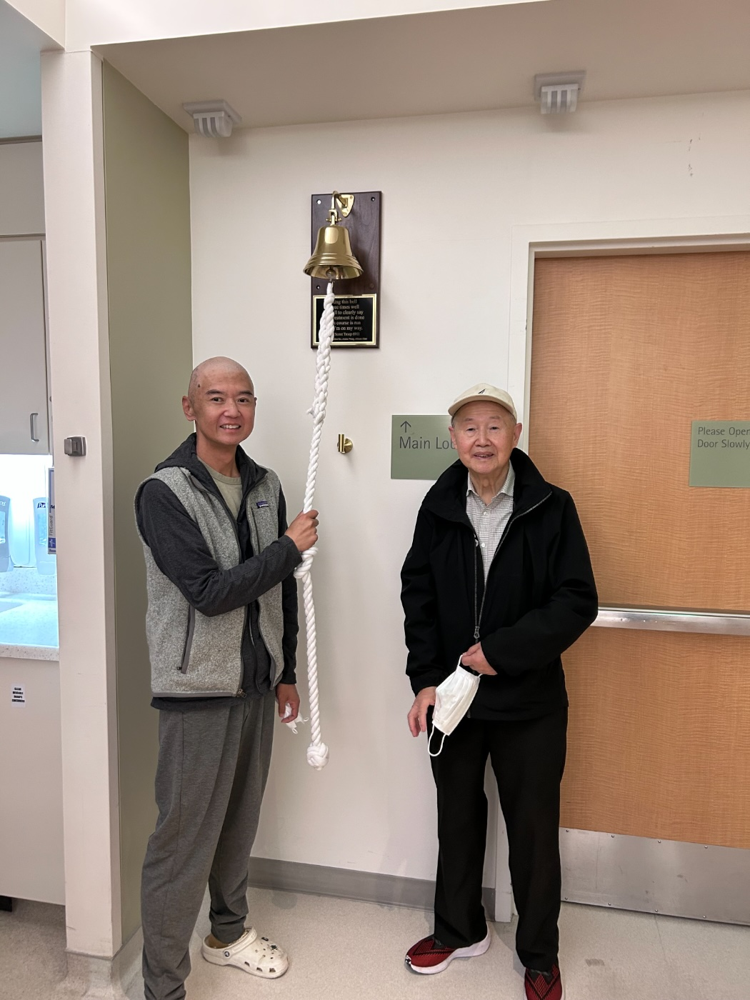
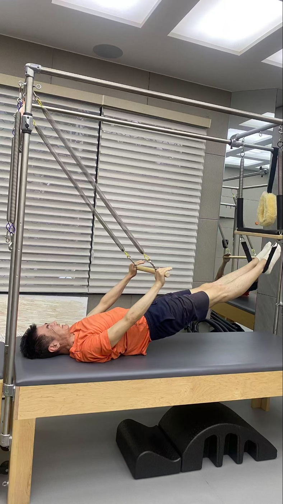
December 2025 – today
From December 2025, back home and working with Claude, the ideas I had been carrying finally took off. I stopped writing most of the code myself and started designing the system the code is written in: Foundry. A bug database sits at the centre; AI coding agents (Claude, MiniMax) each work in their own git worktree; Crucible, a gated check-in farm, runs the full test suite on every change before it can merge; and AI manager roles (project, release, test, infrastructure and others) pick the next work, decide what ships and keep the machines healthy. Every bug found becomes a pinned test, so the system improves with every iteration. It is the same discipline I learned at Microsoft, with agents in place of a team.
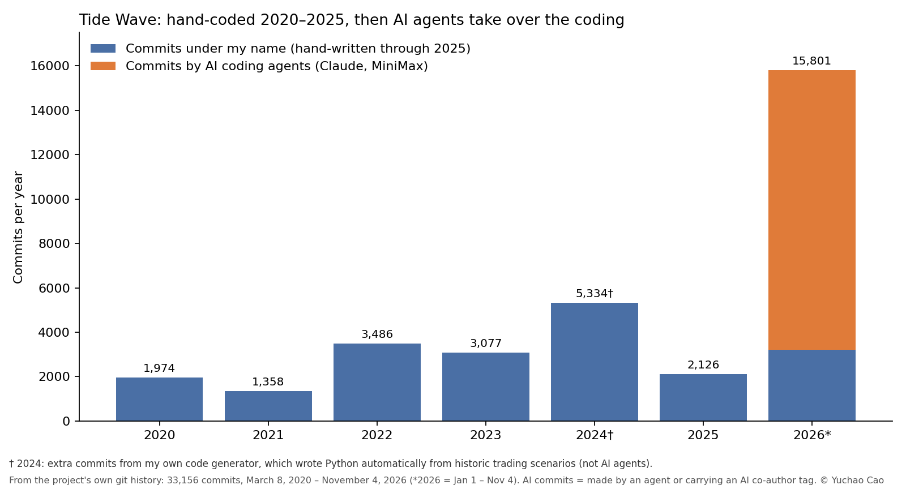
Measured November 4, 2026, and still growing every day.
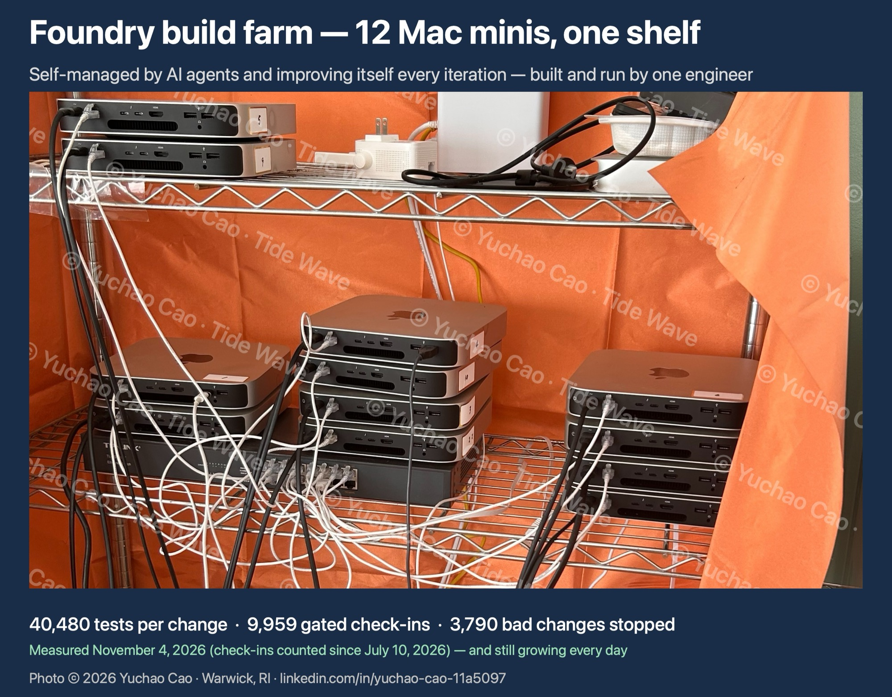
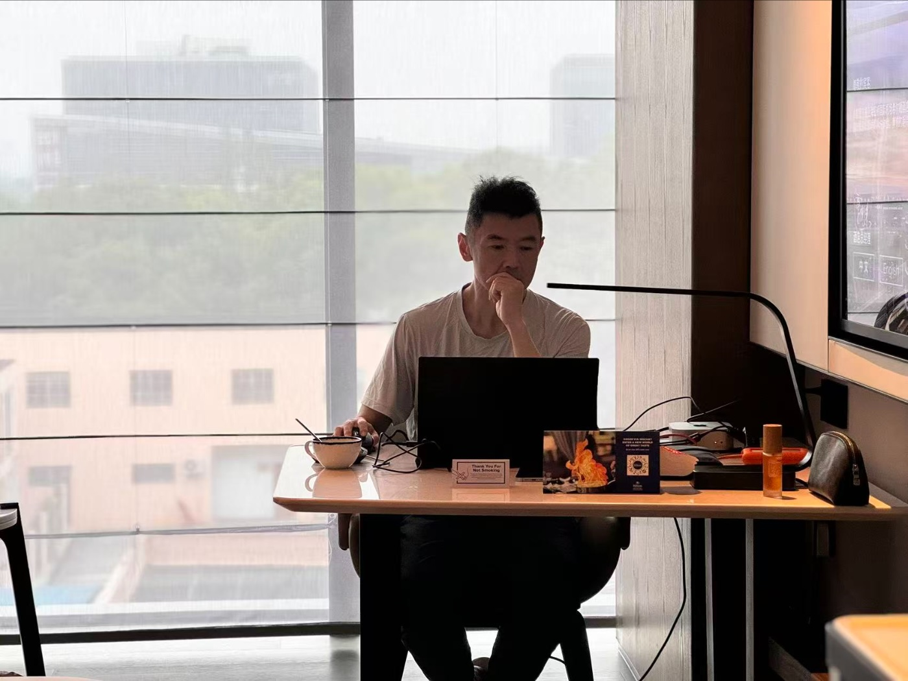
Handing the coding of a one-person trading company to AI agents is not finished. Each month the agents take on more, and my job moves further from typing code toward deciding what to build, setting the rules and reviewing the work. What I am looking for next is a role where that experience, building and testing systems with people and now with AI, solves real problems for a team.
More: Foundry design · the architecture write-up · the GitHub repository. This page contains no trading code and is not financial advice.